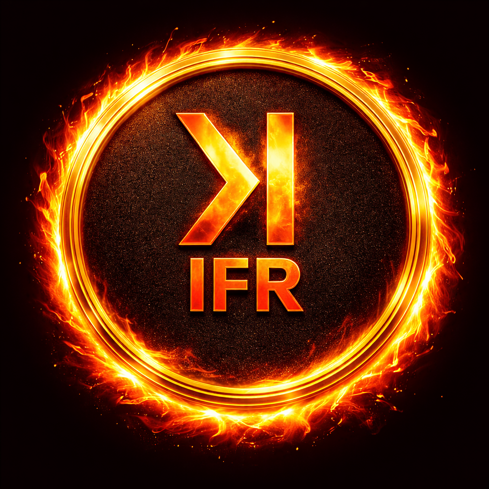

Inferno ($IFR)
The Deflationary Utility Token
Lock. Use. Benefit. Across Every Product.
The Deflationary Utility Token
Lock. Use. Benefit. Across Every Product.
What is Inferno
Inferno ($IFR) is a deflationary ERC-20 token built on Ethereum. Every transfer automatically burns 2.5% of the amount, permanently reducing the total supply. An additional 1% goes to the protocol pool.
Beyond its deflationary mechanics, IFR serves as a universal utility lock. Users lock IFR tokens to gain lifetime access to premium features across an ecosystem of partner products — no subscriptions, no recurring fees.
Built on the Community Fair Launch Model: no presale, no VC rounds, no insider advantages. 100% transparent, on-chain distribution from day one.
How It Works
Lock IFR tokens into the on-chain lock contract. Your tokens are held securely, with no admin backdoors. You retain full withdrawal rights at all times.
Partner products query the lock contract to verify your status. While your tokens are locked, you enjoy premium features across all integrated applications.
Withdraw your tokens at any time. Access reverts to the standard plan. No penalties, no lock-up periods, no friction. Your tokens, your choice.
Tokenomics
Every transfer burns tokens permanently. The supply only goes down. No inflation, no minting after launch.
Every Transfer Burns IFR Permanently
Team tokens are vested over 48 months with a 12-month cliff. Liquidity reserve has a 6-month lock with staged quarterly releases.
Ecosystem
Lock IFR once and unlock premium features across every integrated product. Each partner queries the same on-chain lock contract.
Privacy-first communication platform. Lock IFR for lifetime premium access: encrypted calls, advanced routing, and priority support.
New integrations are being developed. Any product can query the IFRLock contract to offer premium tiers to token holders.
The ecosystem is open and permissionless. Build your product, integrate the resolver, and tap into the IFR holder base.
Three steps to lifetime access for your users.
Register as a partner through Governance. Receive a PartnerVault allocation with lock-triggered Creator Rewards and integration support.
Add our verification snippet to your backend. Five lines of code — that’s it.
Your users lock IFR for lifetime premium access. No subscriptions, no recurring fees.
Partner rewards are driven by real user engagement: when a user locks IFR for a creator's product, the creator earns a percentage (policy target 10–20%, hard bounds 5–25%) from the Partner Ecosystem Pool (40M IFR, 4% of supply). Rewards vest over 6–12 months with per-partner and annual emission caps. This lock-triggered model is inherently deflationary — more IFR is locked than distributed. When DAO governance launches in Phase 4, partner-held tokens grant proportional voting rights in protocol decisions — partners become stakeholders with real influence.
// Verify IFR lock status (ethers.js v5)
const ifrLock = new ethers.Contract(LOCK_ADDR, LOCK_ABI, provider);
const minAmount = ethers.utils.parseUnits("5000", 9);
const isLocked = await ifrLock.isLocked(userWallet, minAmount);
if (isLocked) {
grantLifetimeAccess(user);
}
Architecture
Three independent layers keep concerns separated. The on-chain truth layer knows nothing about apps. Apps know nothing about each other.
Truth Layer — On-Chain
Open-source Solidity contract on Ethereum, static analysis verified. Stores lock amounts and timestamps. Exposes isLocked(user, minAmount) for external queries. No app logic, no user IDs.
Bridge Layer — Stateless
Stateless middleware that translates wallet queries into license checks. Maps wallet addresses to product entitlements. Privacy-neutral: no personal data stored.
Service Layer — Off-Chain
Any product can integrate via the resolver API. Each app independently decides what lock amount qualifies for premium access. Fully decoupled and permissionless.
Security & Trust
All smart contracts are fully open source on GitHub. Verify every line of code yourself.
Comprehensive test suite covering all contracts: deployment, edge cases, access control, integrations.
Slither static analysis: 0 high/critical findings. 15 fixes applied, 36 accepted informational. Third-party audit recommended before mainnet.
No instant admin changes — every action requires a 48-hour public delay. Guardian emergency cancel.
No presale, no private rounds. Team tokens vested over 48 months with 12-month cliff. Liquidity locked for 6 months.
All 10 on-chain components (9 repo contracts + 1 Uniswap V2 LP Pair) deployed and verified on Sepolia. Full protocol smoke test passed: fees, burns, governance lifecycle.
FAQ
isLocked(walletAddress, minimumAmount) which returns true or false. No complex APIs, no user databases, no wallet storage needed. Partners benefit from token allocation from the Partner Ecosystem Pool (40M IFR, 4% of supply). Allocations are vested and milestone-based to ensure long-term alignment. Partners also receive revenue sharing, prominent listing on the Inferno website, and access to a growing user base. Privacy by design: the partner app never stores wallets and never makes blockchain calls directly. Everything goes through a stateless resolver. Full integration guide with code examples available in our Developer Documentation.Roadmap
Smart Contract Development (10 contracts, 256 tests). Security Audit (Slither, 0 high/critical). Testnet Deployment (Sepolia, all verified). Governance Dashboard deployed.
Mainnet Deployment. LP Pairing & Lock. Dashboard Launch. First Partner Integration (SecureCall).
Partner Ecosystem Expansion. Guarded Buyback Automation. Multi-Chain Expansion (L2s). Developer SDK & Documentation.
DAO Governance Migration. Community Proposals. Partner Voting Rights. Governance Multisig Transition. Protocol Revenue Sharing.
Cross-Chain Bridges. Advanced Lock Types (tiered, time-based). Partner Self-Service Portal. Ecosystem Fund.